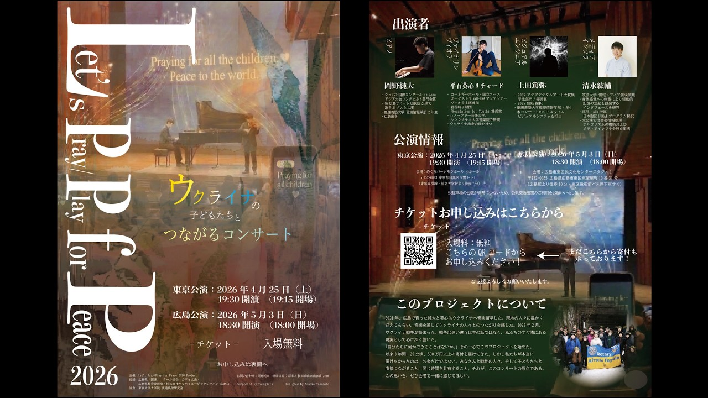

Projects / Engineering
Let's Pray / Play for Peace 2026
Streaming and audience-participation systems for a charity concert supporting Ukraine

Let's Pray / Play for Peace 2026 is a charity concert in support of Ukraine, held on April 25, 2026 in Meguro, Tokyo, and on May 3 in Hiroshima. People in the hall answer questions from their phones, and their answers flow onto the screen and into the TouchDesigner visuals. The concert was also streamed live with comments on the viewer page, and in Hiroshima, voices sent by children abroad through a Ukrainian-language form joined the same stream as the answers from the hall.
Kosuke Shimizu designed, built, and ran the technical systems for both shows almost entirely on his own. They fall into four parts: the path that carries the venue video to the internet, the web service for online viewers on Cloudflare, the local system through which the audience in the hall posts answers, and the venue network that carries all of it.
Record
System Architecture
The system has four parts: live video, the web service for online viewers, the answer system on the venue's local network, and the venue network itself. What runs in the venue and what runs in the cloud are kept apart, and only three connections cross between them.
04Venue network
Router, PoE switch, and two Wi-Fi APs, with the venue line and a cellular line upstream. Audience phones stay inside the LAN.
01Video
- Cameras
- ATEM Mini Pro
03Venue answers
- Audience phones
- Wi-Fi AP
- nginx
- Answer API (Node + SQLite)
- Screen / TouchDesigner
- cloud-poller
- Answer API
- RTMPSATEM → Stream Live
- HTTPS / every 5 scloud-poller → Worker
- ZoomControl PC → Zoom
Cloudflare
Viewer load is absorbed on the cloud side.
01Streaming
- Stream Live
- Viewer page
02Online comments
- Viewers
- Pages (React)
- Worker (Hono)
- Durable Objects (SSE)
- Worker
- D1 / R2
Video takes a separate path from comments and posts. It goes straight from the ATEM to Cloudflare Stream and never passes through the comment API or the venue server. If the comment API stops, the stream keeps going; if the stream degrades, posts are still accepted. A fault on either side stays on that side.
Design Judgments
-
Keep the cloud and the venue as separate systems
Online viewers and the audience in the hall differ in scale, in how far they can be trusted, and in the quality of their connection. The two sides were therefore given separate code and separate databases; within one TypeScript monorepo they share only two packages, the type definitions and the export format. An unstable venue line does not touch the cloud side, the venue side runs without the internet, and the data from both can later be handled in one format.
-
Keep audience phones off the internet
The venue uplink was thin and had to be kept for the stream and Zoom. Audience phones only need to reach the answer page, so the router blocks LAN-to-WAN traffic for the DHCP range given to the audience. One rule removes the risk of hundreds of phones using up the line, and only three devices go online: the ATEM, the Zoom PC, and the server PC.
-
Keep the PC out of the video path
The PC was to handle Zoom, ATEM control, and the venue server at once. To keep those jobs apart, OBS was left out and the ATEM's built-in encoder sends straight to Cloudflare. Cloudflare is not among the ATEM's official destinations, so it was added by editing the ATEM's configuration file (Streaming.xml). The PC is no longer a point of failure for the stream, and the load is spread out.
-
Put an unbroken stream ahead of low latency
For a piano concert, arriving without dropouts matters more than getting latency under a second. About five seconds of delay was accepted, WebRTC and low-latency modes were not used, and delivery was left to Cloudflare Stream as a managed service. That kept the amount of code down and left fewer parts that could break.
-
Treat the venue server as fragile
A venue server sometimes cannot run without loosening its firewall, so it has to be treated as more fragile than it looks. Only nginx on port 80 is exposed, and the answer API is reachable only from localhost. The audience and the organizers use separate entrances, and the organizers' entrance accepts only admin devices and requires a password. Admin authentication uses a server-side session with no secrets in the browser, and only the operator can create events, so several layers of control protect the system even with unknown participants on the same LAN.
-
Push questions at once, collect posts quietly
When the operator switches questions, that one-to-many message has to arrive immediately. Audience posts are many-to-one, and the operator's review can lag a little. Question switches are therefore pushed over SSE, posts are received by POST and simply stored, and the operator's review screen and the venue screen fetch by polling. SSE carries only state, never the posts themselves, which avoids sending N people's posts to N people.
-
Let everyone stay in when the connection cap is reached
Concurrent SSE connections are capped at 200. Devices beyond the cap fetch the state by polling every 45 seconds. Question switches reach them later, but everyone can keep taking part. How the system degrades at its capacity limit was decided in advance, so reaching the limit locks no one out.
-
Accept posts without approval, guarding only against duplicates and flooding
Posts are not held for approval. One person can post as often as they like, and the volume of voices is treated as part of the expression. Resends on venue Wi-Fi are absorbed by idempotency keys, and only mechanical rapid-fire posting is stopped by rate limits. The operator can hide a problem post at any time and unhide it later, with the data kept, so the room can be managed without stopping the live flow.
-
Leave the input to the visuals untouched
What is sent to TouchDesigner is never rewritten on the way. Delivery is one-way, with a queue of up to 200 items and a 1.5-second timeout in between, so accepting posts continues even if TouchDesigner stops. Online posts carry a label distinguishing them from venue posts, so they do not disturb the input to the work. The visuals, storage, and display never get in each other's way.
-
Let the venue fetch online posts
On the day of the show, it was decided to bring the voices of children abroad into the work in the hall. The venue sits behind NAT with unstable addresses, so there was no way to deliver anything into it from outside. The children posted through a limited form in Ukrainian (up to five posts each, with other people's posts hidden), the posts were stored in D1, and the venue server fetched them every five seconds. A saved cursor marks how far it has read, so after a dropped connection it resumes where it stopped.
-
Serve the audience page whatever host name is used
The audience entrance was set as nginx's default server (default_server with server_name _). On the day, host names could not be used and the server's address changed several times, yet the audience page kept being served without touching the nginx configuration. In the end this was the biggest safety net.
Live Video
Cameras are switched on an ATEM Mini Pro, which sends the program over RTMPS to a Cloudflare Stream Live input. The baseline is 1080p30 at 5–8 Mbps CBR with AAC audio and a 2-second keyframe interval, dropping to 720p at 3–4.5 Mbps on a weak line.
The viewer page reads which live input to play from the event record in the database (D1), so the input can be recreated or swapped for a spare without redeploying the page. The same feed also goes from the ATEM's USB-C output into a PC and on to Zoom.
Web for Online Viewers
The viewer page runs on Cloudflare Pages (React / Vite) and the API on a Cloudflare Worker (Hono), both under one domain. With page and API on the same origin, no CORS setup is needed and cookies behave simply. Load from a growing audience is absorbed by Cloudflare, which serves the static files and the video.
Each event gets one Durable Object for its comments. Every post and every SSE push to connected viewers passes through that one place. It also holds the posting mode (OPEN / SLOW / CLOSED) and the slow-mode checks, so no state has to be kept consistent across Worker instances. The trade-off is that all connections for an event gather in one Durable Object: fine at a few hundred viewers, and something to load-test beyond a thousand.
D1 holds the canonical record of comments, and the only timestamp is the time the Worker received each post. Device clocks drift by model and setting, so display order and log times all follow a single server-side clock. Exports and audit logs go to R2. A post passes WAF rules and rate limiting, then the Worker checks its length, the room state, slow mode, and blocked words. Turnstile is built in for bot protection but off by default, so viewers can post immediately. The admin console sits behind Cloudflare Access, on a separate entrance from the public page.
For Hiroshima, a pre-show waiting screen, an ended state that switches on automatically after the show, a donation link, and the Ukrainian-language posting form were added.
Venue Answer System
In the hall, the organizers put one question at a time and the audience answers briefly from their phones. Other people's answers are not shown on the phone; they appear only on the venue screen. Answers are stored and also sent to TouchDesigner for the visuals.
The system consists of nginx, an answer API (Node + SQLite), the audience screen, and an admin screen. SQLite was chosen so the whole system runs on one PC in the venue without depending on any outside service. nginx trusts X-Forwarded-For only from a known upstream, so an audience device cannot forge the header to slip past rate limiting.
The deduplication key combines the event, question, session, and request IDs; for online posts, the post's own ID is used, so re-reading the same range creates no duplicates. From the admin screen the operator switches questions, opens and closes answering, hides answers, shows the QR code, and exports data as JSON, JSONL, or CSV, with CSV exports protected against formula injection.
Venue Network
The venue network was built from a TP-Link ER7206 VPN router, a TL-SG2008P PoE switch, and two EAP610 Wi-Fi access points. The router handles DHCP, NAT, and the firewall, with the venue's fixed line and a cellular line upstream. The two access points cover the hall under one SSID.
Addresses are divided by role. The server PC, the ATEM, the control PC, and the TouchDesigner PC have fixed addresses, and audience devices get addresses from a separate DHCP range. The internet block applies to that audience range.
Security Review Before the Show
Of the measures in judgments 5 and 7, the server-side session, the separated admin routes, the event allowlist, and the SSE cap were added in a review of the venue system the day before the Hiroshima show. The same review added a 429 response for rapid repeat posts or too many posts per minute, a lockout after repeated failed admin logins, an SQL limit on the public feed, and a health check that reports the connection count.
Recovery on the Day
On the day of the Hiroshima show, the venue network configuration broke down and the stream briefly showed as Disconnected. Recovery followed a fixed order of priority: the stream first, then the audience entrance, then online posts.
When the stream dropped, the first check was whether the ATEM's network segment could reach the internet, before suspecting protocols or equipment compatibility. The day before, the same check had solved a case where the ATEM showed it was streaming while nothing reached Cloudflare, and that experience carried straight over. The stream was back before the show started and ran to the end, and the venue answer system was brought back to the point where 103 audience devices took part during the show. The events of the day are described in a blog post (in Japanese).
Operation in Hiroshima
At the Hiroshima show on May 3, the audience answered from their phones for about twenty minutes after the start. The figures below come from the nginx access log.
- 103Devices that took part, about 80% of them iPhones.
- 108Posts from the venue.
- ~2,300Requests, with zero 5xx errors at the application layer.
- 159SSE connections, within the cap of 200.
Online posts from children abroad also appeared on the venue screen, marked with their origin. The venue answer system was first run at the Tokyo show in Meguro on April 25, and its setup was refined from that experience for Hiroshima.
Review
The review arrived at one point: a physical address such as an IP or MAC address tells where a device sits on the network, and a device's identity has to be held somewhere else. This time IP addresses were treated as device identities and embedded in access rules, QR codes, and configuration files, so when the physical layer shifted, the effect reached every layer above it. The review traced exactly where the initial assumption, that a fixed IP on the same line would never change, stopped holding.
The next design will overwrite physical-layer uncertainty with logical-layer stability: a stable logical identity from an overlay such as Tailscale, devices looked up by name through a local DNS, and the configuration declared as code with Terraform and Ansible. The root-cause analysis, the design principles for next time, and a runbook for the day were written up and committed to the repository the day after the show.